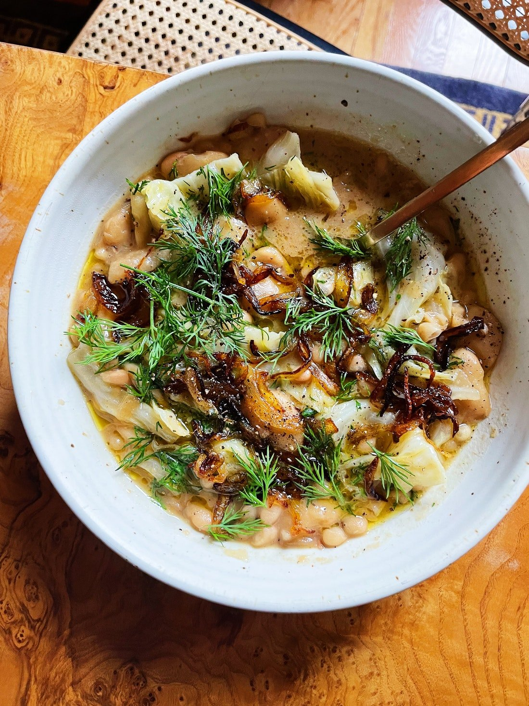

Dilly Bean Stew Recipe by Alison Roman

Description
This recipe takes your humble cabbage and turns it into delicious and warming soup.
It's easy and fast to make on a weeknight and I think it is best when paired with a hearty
sourdough loaf. Kudos to Alison Roman for making such a delicious bowl of soup.
I would eat this every day if I could.
Here is the original recipe.
Ingredients
- 2 tablespoons unsalted butter, plus more (optional)
- 2 tablespoons olive oil, plus more
- 1 large onion, thinly sliced
- kosher salt, freshly ground black pepper
- 2 15-ounce cans white beans such as navy, butter, cannellini, drained and rinsed
- 4 cups vegetable or chicken broth (or my preference, 4 cups water plus 1–2 tablespoons better than bouillon)
- ¼ of a head of cabbage, core removed, coarsely chopped (roughly 8–10 ounces)
- 1 tablespoon white distilled vinegar or fresh lemon juice (lemon juice should be last resort– white distilled vinegar really should be the thing you use here)
- 1 cup dill, coarsely chopped
- Sour cream, if you must
Directions
- Heat butter (if using) and olive oil in a medium pot over medium–high heat (if not using butter, add 2 more tablespoons olive oil). Add onion and season with salt and pepper. Cook, without stirring too much or too frequently, so they get nicely browned and frizzled over 5–8 minutes. You do not want jammy, caramelized onions, but you also do not want burnt onions, so just adjust the heat and frequency of stirring as needed.
- Using a slotted spoon, transfer ¼ of the onions to a small bowl; set aside (for topping!).
- Add the beans and season with salt and pepper. Using a wooden spoon or spatula, smash some of the beans into the pot, breaking them up to release the creamy, starchy interior (this is what will thicken your stew). I say “some of” because we are not making refried beans, nor are we making bean pureé– but we do want to have some that are more broken down than others. Think whole, tender beans swimming in a pot of creamy, broken down, lightly brothy beans.
- Add the broth (or water + bouillon) and bring to a simmer. Simmer until the texture is to your liking (soupier, stewier, you choose) and everything is tasting nice and savory, 15–20 minutes or so. Add the cabbage and vinegar, stirring to wilt. Simmer until the cabbage is totally tender and all the flavors have melded, 10–15 minutes. Season with salt, pepper, and more vinegar if you like.
- Remove from heat and stir in half the dill. Divide among bowls and top with more dill and some of those reserved frizzled onions. Give another drizzle of olive oil (or a teeny knob of softened butter, live a little) and crack of black pepper. Not that you need my permission, but if the mood strikes, sour cream is also great here.